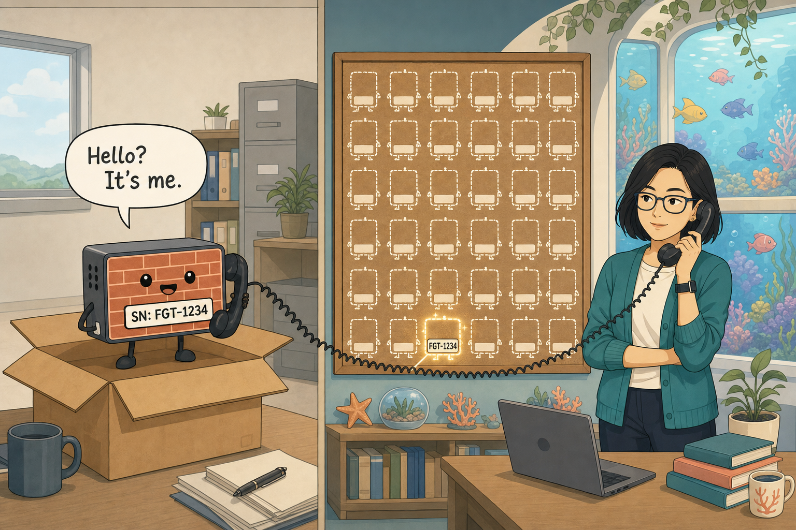
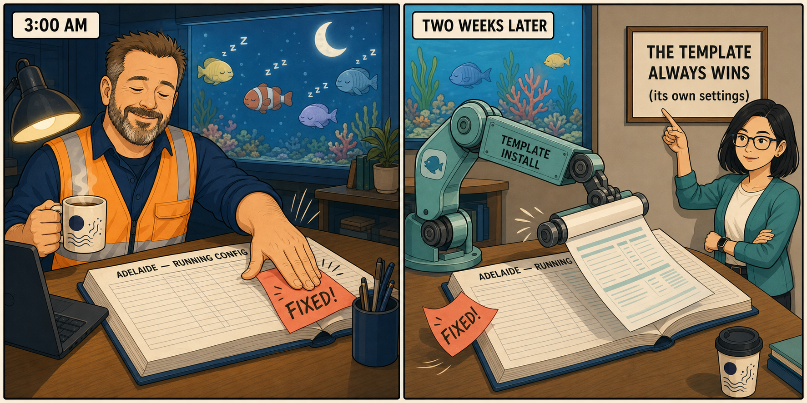
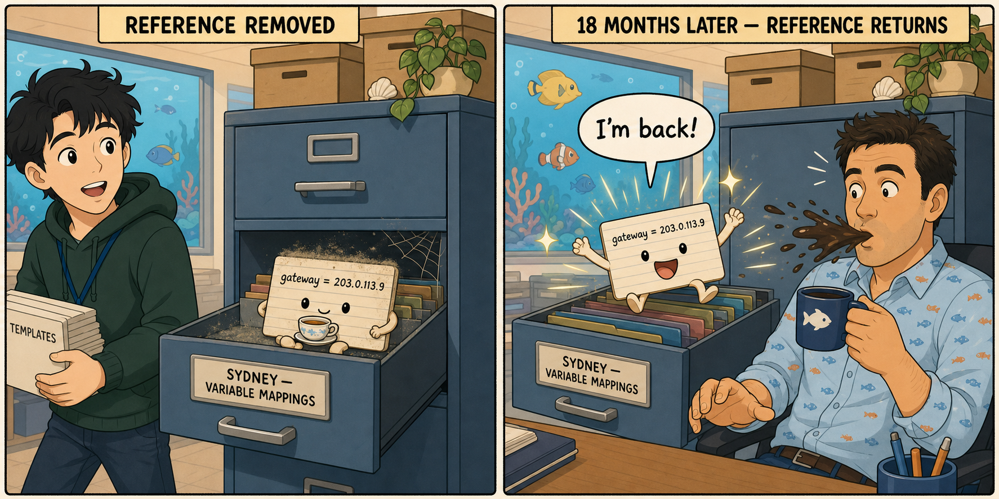
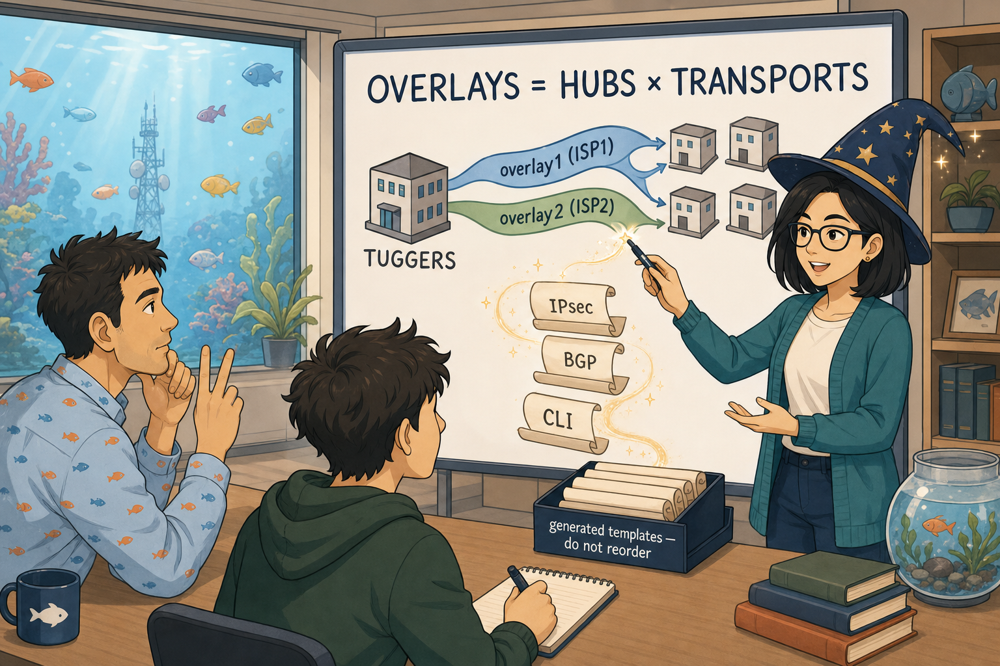
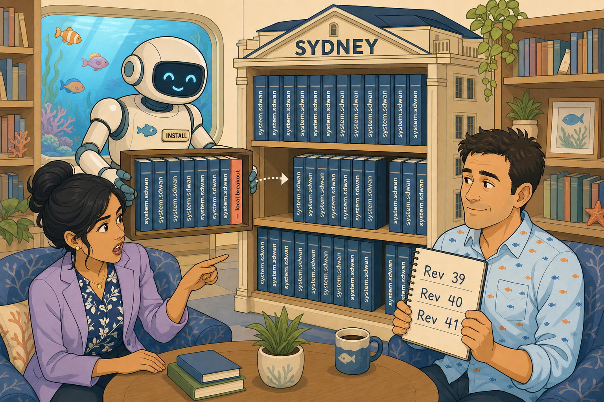

The Branch in a Box
In which a factory-default firewall must become a Department device with nobody touching it.
Dr Finch didn't stop at Sydney.
Thirty branch FortiGates. Ordered, paid for, shipping across every state — Perth, Adelaide, Darwin, Brisbane, a dozen regional offices nobody in the room had visited. And not one of those sites would have a network engineer standing in it when the box was opened.
Which is when Mel Chen came into the story properly. FortiManager and automation. Exacting about templates, mappings, revisions and installation targets in a way that reads as pedantic right up until the moment it saves you. Her opening question was the whole episode:
"How does a factory-default FortiGate, unboxed by somebody who has never seen a CLI, become a correctly-named, correctly-addressed, minimally-working Department device — with nobody touching it?" — Mel Chen
Discovery, then the handshake
Samwise reasoned the first step from first principles. The box has no configuration. It doesn't know the Department exists. So it must discover a management point — either a DHCP option handed out by the local network pointing at FortiManager, or a DNS / FortiCloud call-home that redirects it to the right place. Either way it ends up talking to FortiManager, identifying itself with the one thing it has that is unique and known in advance: its serial number.
Which means FortiManager must already know that serial, and already know what it's supposed to become — prepared in advance, before the hardware ships. The mechanism: CSV import. And the bit that gets misread: a row is not inert data. Importing the CSV creates a placeholder device object — real, pre-authorised against a specific serial, sitting there waiting. When a device with that serial calls home, FortiManager matches it to its placeholder and pushes down the placeholder's configuration.

1. Power on, no configuration. → 2. Discover a management point (DHCP option, or DNS/FortiCloud call-home). → 3. Authenticate to FortiManager by serial number. → 4. Match against a pre-created placeholder device object (CSV import). → 5. Push the attached device blueprint. → 6. Device up: named, addressed, minimally working. Zero on-site CLI.
Blueprint is not template
A device blueprint is a one-shot recipe applied at the moment of ZTP provisioning. It fires once, when the device first calls home, and then it is finished — no ongoing link back to the blueprint object. An SD-WAN template is a live, shared object: edit it, reinstall it, and the change propagates to every mapped device.
The operational consequence the exam actually cares about: you cannot fix a deployed fleet by editing a blueprint. Ten branches provisioned with a bad setting? Correcting the blueprint does nothing to those ten. Its job ended at birth. Fixing them needs something with an ongoing relationship — which is what the rest of this book is about.
Mel put it best: blueprints get them born. They don't keep them raised.
Two ways to fail, told apart by one fact
A branch was shipped, plugged in, and never came up. Samwise's first move was "serial mismatch" — plausible, but offered as a conclusion with a second equally plausible cause sitting right next to it. One redirect: what evidence separates the two?
| Observation | What it proves | Investigate |
|---|---|---|
| Device appears in FortiManager as unauthorised | Discovery worked; the match failed — no placeholder for that serial | CSV / serial number |
| Device never appears at all | It never reached FortiManager | DHCP option, DNS, FortiCloud path, WAN link |
Same user-facing symptom, two different investigations, split by one piece of evidence — the same which-plane-failed discipline from Book One, applied to management infrastructure. And the containment check: thirty rows, one typo'd serial? Twenty-nine provision normally. The failure is contained to the row that's wrong. CSV import's value is consistency and error reduction, not speed — thirty reviewable, diffable rows beat thirty separate GUI conversations. Per-site variance (Perth's different bandwidth) belongs in the CSV row, not hardcoded into the thing everybody shares.
The Source of Truth
In which a 3 a.m. fix survives exactly until the next routine install.
Perth and Adelaide came up. Two branches, provisioned by ZTP, working, and nobody had driven anywhere. Which left Mel with the problem her own closing line had set up: blueprints handle birth. What handles the next five years?
The Adelaide emergency
The scenario was concrete. Racks, at three in the morning, makes an emergency change on Adelaide's FortiGate directly at the CLI. Fixes the problem. Goes back to bed. Two weeks later Mel does a routine template install to Adelaide — and the local change is silently overwritten.
Because a FortiManager template is the ongoing source of truth for whatever it manages, and every install reasserts it. Not merges. Reasserts. If the template says one value and the device has drifted to another, the install puts the template's value back and says nothing dramatic about it.
With one important boundary: the install only reasserts settings the template actually manages. A local change to something the template has no opinion about survives a routine push — though it stays vulnerable to other mechanisms. Hold that boundary; it becomes the hinge of the whole season in Chapter Twelve.

Install Preview plus FortiManager's revision comparison shows exactly what a push will change on a device — before it changes it. That's how you spot yourself about to undo Racks' 3 a.m. fix.
The ownership test
Gonzalez ran three examples — a branch's WAN gateway IP, an SLA latency threshold, Perth's gateway after the ISP renumbers it — and asked for the general rule. The obvious rule ("template it if it's the same everywhere") dies immediately: the gateway differs at every site and still belongs in the template. The actual rule is better:
A setting belongs in the template when it is stable and design-intent-driven — when the template should always win any drift contest.
A setting stays device-local when it must change faster than a revision-and-install cycle can support.
The test is not "does the value differ per device" — it is who should own the change, and how fast must the change happen.
ADOMs
Dr Finch's second requirement: regional contractors should onboard interstate branches without seeing core DC infrastructure. Samwise named ADOM — Administrative Domain — correctly, but wasn't sure how it relates to templates. Gonzalez used proof by contradiction: different branches already need different SD-WAN templates because their hardware differs — would one-template-per-ADOM survive that? Obviously not. So:
An ADOM sits structurally above templates as a containing security and visibility boundary. One ADOM holds as many templates as diversity requires. ADOM answers who can see this; template answers what design does this device get. Different axes. The Global ADOM holds shared governance objects — the global object database, header and footer policy packages — not branch templates.
And the limitation Samwise found himself: ADOM scope is coarser than site level. Put Perth's contractor and Sydney's contractor in one "Branches" ADOM and they see each other's devices. That doesn't meet the requirement — left open, honestly, rather than papered over.
Device-local vs metadata variables are not two answers to one question. Device-local answers who owns this setting and how fast must it change — an ownership decision. Metadata variables answer this is already template-owned but the value differs per device — how do I substitute? Variables only become relevant after a setting has qualified for template ownership.
One Template, Many Values
In which every branch gets the same recipe with different ingredients.
Mel had the ownership model. What she didn't have was the mechanism to let one SD-WAN template serve Sydney, Perth and Adelaide when every one of them has a different gateway, a different probe target, and — on some models — different interface names.
The mechanism
The template holds the variable name and an optional default. Each device holds its own variable mapping table of overrides. In the template you write set gateway {{gateway}} — not a value, a name. At install time FortiManager resolves it per device:
1. Device-level override — if the device has a mapping for this variable, it wins.
2. Template default — used when no override exists.
3. Neither — Install Preview blocks the install for that device only. The rest of the run succeeds.
Set the common case as a default, override the exceptions — twenty-eight of thirty branches need no mapping at all.
An important consequence: the configuration that reaches the FortiGate contains no variable syntax. FortiManager renders a complete, fully-resolved literal script per device. The FortiGate has no concept of metadata variables — so you cannot troubleshoot a variable problem on the FortiGate. It lives entirely on FortiManager's side of the wire.
And variables are field-agnostic — pure text substitution, legal in any static field including structural ones. set interface {{wan2_port}} resolves to port2 on one platform and wan2 on another, and one template serves both. ($(var) and {{var}} are two syntaxes for the same store — one feature, not two.)
The orphan
This one needed a full walkthrough, because it spans three moments in time. Sydney has an override for gateway. Somebody edits the template and removes the field that referenced {{gateway}}. What happens to Sydney's mapping?
Nothing. Not deleted, not garbage-collected — it simply stops being read. It sits in Sydney's table, inert. And here is the trap: if the reference ever comes back, that old mapping resolves again immediately, silently. A value somebody set eighteen months ago, for reasons nobody remembers, reaches a production device the moment a template edit reinstates the reference.

| Operation | Device's data | Next install |
|---|---|---|
| Remove the variable's reference from the template | Untouched — survives, inert | Setting isn't written at all; nothing to resolve |
| Delete the device's override entry | Destroyed | Falls back to template default, or blocks if none |
Referential integrity, and the hard one solved cold
Install Preview validates, per device, that everything the template references actually resolves or exists on that device. An unresolved variable and a reference to an interface the hardware doesn't have are the same failure mode: the template asking for something the device can't provide. Both block only the affected device.
The closing question was genuinely nasty and was answered independently, first attempt: Sydney has an override; Perth and Adelaide rely on the template default; somebody deletes the default. Next install? Sydney installs fine — its override never consulted the default, so removing it is invisible. Perth and Adelaide block — no override, no default, nothing to resolve. Three devices, one change, two outcomes, held simultaneously.
Four Questions Before You Touch a Template
Halfway through the season, Samwise called it himself: "I can define all these things individually and I cannot relate them to each other." Junior — seconded onto the branch build — arrived with the same confusion and a better phrasing: "If I change something in FortiManager, where does that change actually sit before it reaches the firewall?" The consolidation session built the frame the rest of the season runs on.
The Order They Speak In
In which two correct templates are refused an install because nothing says who goes first.
Junior did the work, and he did it correctly. Sydney's local breakout — designed four episodes earlier, never built — now existed as two provisioning templates: a CLI template, gated by a Jinja conditional, creating port5 as a WAN interface; and an SD-WAN template adding port5 as a breakout member. Both correct. Both reviewed. And Mel refused to authorise the install — because nothing anywhere declared which one FortiManager would write first.
Physical is not logical
Samwise made a genuinely good distinction unprompted: on a 100F, port5 is a physical port — it exists at power-on, before any configuration is read. The CLI template isn't creating it, only configuring it. So for port5 specifically, ordering is harmless. Then he over-generalised to "so ordering wouldn't matter" — recovered in one redirect, because plenty of interfaces are created by configuration: VLAN subinterfaces, IPsec tunnel interfaces, loopbacks, zones, aggregates. None exist until a command creates them, and any reference before that command is a reference to nothing.
The FortiGate is a parser, not a compiler
FortiManager assembles one complete install script per device. The FortiGate consumes it line by line, validating each name against what exists at that exact instant. No whole-script resolution pass, no forward declarations, no second attempt. If the object doesn't exist yet, that command is rejected — and everything else still lands.
| Unresolved variable | Forward reference | |
|---|---|---|
| Caught | Before push, by FortiManager | During push, by the FortiGate |
| Device state | Unchanged | Partially configured |
| Job result | Blocked for that device | "Completed with errors" |
| Dashboard | Obvious | Looks green |
| Character | Loud — stops you | Quiet — the dangerous one |
Dependency is not conflict
Asked to name Sydney's structural fault, Samwise offered three candidates at once — undefined order, collision, overwrite — then eliminated cleanly: the CLI template writes config system interface, the SD-WAN template writes config system sdwan. Different families, no shared setting, so no precedence contest. Which produces the distinction that names the chapter:
A CONFLICT is two authors writing the same setting with no defined precedence. There is no ordering fix — sequencing just picks the loser consistently. The fix is to remove one author.
A DEPENDENCY is one author needing another's output. Both are correct; they just have to happen in order. The fix is to declare the sequence.
Diagnose one as the other and you reach for the wrong mechanism entirely.
Template groups, and Brisbane's problem
The fix was a template group — Branch-Standard: System, CLI, SD-WAN, Static Route, in declared top-down order, assigned as a single unit to the branch device group. The fault existed only in the relationship between two correct objects; the fix changed neither of them.
Behind Sydney sat the thirty-branch question: Brisbane needs an MPLS member; Perth and Adelaide must not have one. A second near-identical template group means divergence — every future change made twice, by whoever remembers both exist, until somebody doesn't. The better answer, derived in the correct order — which template type does this live in? (SD-WAN, structured) then what is that type's structural-variation tool? — is an installation target: one template for the entire estate, with port4's MPLS member targeted at device group Grp-MPLS-Branches.
And the behaviour that matters: a member whose installation target doesn't match a device is absent from that device's config. Not disabled. Absent.
An empty installation target means EVERY device using the template. It is the absence of a filter, not an empty audience. And it's the safe default on purpose: forgetting the field means shared members still reach everyone — reverse it, and branch thirty-one onboards green with no SD-WAN members at all.
| Metadata variables | Installation targets | Jinja logic | |
|---|---|---|---|
| Structured templates (System, SD-WAN, Static Route, BGP, IPsec, Cert) | Yes | Yes | No |
| CLI templates | Yes | No | Yes |
Structured templates are parsed into addressable objects — that's why a scope field can hang off member three, and why there's nowhere to put an if-block. CLI templates are unparsed text — that's why Jinja exists there, and why nothing can target their parts. Variables cross the boundary; targets and Jinja do not.
Three mechanisms, three questions, never interchangeable: template group — who is in the room and in what order do they speak? Installation target — who gets handed this particular sheet? Metadata variable — what is written on the sheet for this device?
And on his way out, Racks dropped the line that had been waiting eight episodes: "Tuggers is still throwing more sessions down the two-hundred meg pipe than the five-hundred. That weighting you approved. Remember it?" Approved in Book One. Correct on the day. Never installed — because a change that isn't recorded in a mechanism doesn't exist.
The Overlay Wizard
In which the estate learns to multiply, and an eight-episode debt is finally paid.
Two problems arrived in the same hour.
First, Racks' complaint made formal: Tuggers was still dealing sessions evenly across a 500 and a 200. Second, Dr Finch, quietly furious: Perth's fisheries compliance data had been crossing the public internet unencrypted for three weeks — and Darwin-to-Sydney connectivity depended on a hand-typed static route that would not survive thirty branches.
Junior, meaning well, had already drafted the Tuggers weighting — into Branch-Standard's SD-WAN template, with empty installation targets on both members. Samwise caught it cold: empty target means no filter, which would have pushed a DC-specific weighting to the entire branch estate. A missing change, about to become a fleet-wide wrong change. The fix went in properly — a DC-scoped SD-WAN template — and the eight-episode debt closed. With one quiet-failure footnote for the collection: a member weight installed while the zone still sits in source-ip-based mode installs cleanly, reports success, and changes nothing.
Borrowed, not owned
Before the overlay, a sharpening of Chapter Eight's boundary. Samwise over-reached once — "a device is never safe to hand-edit as long as a template is in play" — and corrected himself into the precise rule: blast radius is the set of config blocks the assigned templates author. Hostnames, DHCP scopes, local objects survive every install, because no template writes those blocks. Anything the template writes is borrowed, not owned.
And the timing insight that pays off in the finale: a device safe to hand-edit today can stop being safe without anyone touching it — because its management changes underneath it. Hand-edit safety is a property of the current assignment set, not of the box.
The multiplication
Then the wizard. FortiManager's overlay orchestrator: point it at a topology and it generates the IPsec, BGP and CLI templates, adds members and zones to the existing SD-WAN template, and groups and assigns its own output in the correct order. It never touches a firewall. Everything the season taught about templates still explains its output — which is exactly what makes tuning it safe and pulling pieces out of its group unsafe.
THE OVERLAY IS A MULTIPLICATION: overlays = hubs × transports. An overlay is a hub-transport pair, not a transport. That one expression drives tunnel subnets, tunnel interfaces, SD-WAN members and (under BGP-per-overlay) IBGP session counts. A second hub does not join the existing overlays — it creates its own full set.

Existence versus planning
The wizard asks two different kinds of question, and the exam tests them as two different questions. Existence prerequisites — what must be true before the template can exist at all: hubs as managed devices with links configured; branches in a device group (the template can't reference a list — Samwise derived that himself); everything in a single ADOM; and one overlay template per FortiGate. Planning inputs — the decisions you feed it: topology type, overlay address space, loopback address space, BGP AS number.
The plan: single hub, Tuggers, over ISP1 and ISP2. Overlay space 10.200.0.0/14 with 10.201.1.0/24 and 10.202.1.0/24 live — and 10.203/10.204 deliberately reserved for a second hub that didn't exist yet. Loopback pool 10.200.1.0/24, one address per node, for node identification. A later-arriving branch inherits every generated template through group membership — no wizard re-run.
Who knows whose address
The asymmetry comes from who knows whose address. The hub has a static public IP every spoke can be told in advance — so spokes are static-type initiators. Spoke addresses are unknown and mutable — so the hub is a dynamic-type dial-up server, one stanza serving any number of spokes. Every other hub/spoke difference hangs off this one fact: net-device disable on the hub (hundreds of dial-up children is real overhead), net-device enable on the branch (few tunnels, and required for ADVPN shortcuts later). The spoke dials. The hub answers. The hub cannot dial — it doesn't know the numbers.
BGP on loopback, and the arithmetic
Two ways to run IBGP over the overlay. BGP per overlay: one session per overlay per branch. BGP on loopback: the session terminates on loopbacks, one session per hub, and the routes it carries name a loopback next hop resolved recursively through whatever overlays exist. Samwise ran the scale comparison cleanly once the concrete case was set up — 240 sessions versus 60 across the planned estate — plus fewer routes, lighter route-reflector load, no add-path requirement. Loopback won. (The recursion itself — the second lookup that resolves a loopback next-hop into a tunnel — didn't stick this episode. It comes back in Chapter Twelve, hard.)
ADVPN was deliberately disabled. Not rejected — deferred, because it changes the generated IPsec and BGP templates and shouldn't join the fault surface before the plain overlay is proven. Samwise's line for it was the episode's best: "the hub's a matchmaker, not the middleman" — it introduces two spokes that then build their own shortcut, replacing the hairpin.
Installation targets earned their keep too: the wizard adds to the existing SD-WAN template rather than replacing it, so Brisbane's MPLS scoping survived untouched. Which prompted the best unprompted question of the season — why does Brisbane carry an MPLS member at all, when no hub has an MPLS link? An orphan: a transport with no far end. Flagged on the whiteboard, unresolved, waiting for a season that hasn't happened yet.
At 11:52, Perth's two tunnels came up, and the compliance feed crossed the country encrypted for the first time.
Dual hub with two transports = FOUR tunnel subnets, not two. "Gunners joins the existing overlays" is the exam's favourite wrong answer. And network-id is a runtime segmentation guard preventing cross-overlay traffic — not an addressing control, not overlap prevention.
The Second Hub
In which an outage nobody noticed proves more than the outage everybody feared — and a nine-month-old fix quietly dies on a Friday.
At 02:14 on Monday morning, a carrier fault took down Tuggers' ISP1 for eleven minutes. Nobody was paged. Nothing failed over loudly. No BGP event of any kind.
Dr Finch's point, delivered at 07:40, was that the non-event proved exactly one thing: the Department survives a link. It had proven nothing about surviving a site — every path Perth had still ended at the same building — and she had to write that sentence into the quarterly risk paper by Friday.
Three lookups, three destinations
But first, the question the 02:14 event forced into the open: why didn't the BGP session even blink when its transport died? This was the season's hardest model, and it took diagrams, a packet walkthrough, and the direct question — "recursion? is that a route lookup? what is that?" — before it landed. When it landed, it landed properly:
Three lookups per encapsulated flow. 1: the inner destination resolves to a next hop — a loopback address. 2: that next hop resolves in turn to the overlay zone — this second lookup is recursion, nothing more exotic than a route lookup on the next hop, because a FortiGate can only transmit out of an interface, never merely toward an address. 3: after encapsulation, the outer destination resolves to a physical egress. Only the third lookup touches the underlay. SD-WAN participates only in member selection between lookups two and three.
And so the 02:14 answer: the BGP session terminates on loopbacks, not on a tunnel. When ISP1 died, the routing table did not move — lookup one unchanged, lookup two simply resolved to a smaller member set, and the session's own packets flowed over the surviving overlay. That invariance is the entire product the loopback design buys. Samwise's own walkthrough eventually produced the season's cleanest causal line: "BECAUSE overlay1 uses port1, the source IP is port1's, and the IPsec remote gateway is 198.51.100.1" — member decision driving encapsulation, in the right causal order. And his unprompted question — where does Perth get the outer destination address? — got the answer that ties back to Chapter Eleven: remote-gw is static config. The spoke knows the hub's address. That's the whole asymmetry.
The uncomfortable corner: if every overlay to a hub dies, the recursion fails, the prefix leaves the FIB — and traffic does not blackhole cleanly. It falls through to the default route and dies at the policy lookup, or is NAT'd into nothing. Failure leaks; it doesn't drop.
Gunners, and the layer that has candidates
The conversion itself was almost an anticlimax, because Chapter Eleven's arithmetic had already predicted it — and this time Samwise built the plan himself: 10.203.1.0/24 and 10.204.1.0/24 live from the reserved space, four overlays, Gunners taking one address from the same loopback pool (10.200.1.2) — a pool per estate, not per hub. Perth went from two tunnels to four, and Racks' warning about session counts landed on schedule.
Then the trap hiding inside the triumph. Four tunnels up and green — and by default, a FortiGate installs a single best path. Without ibgp-multipath enable, the FIB holds one hub's next hop; the SD-WAN rule has no Gunners member to select, and hub failover waits on BGP hold-timer expiry — up to three minutes — while four tunnels sit there, up, green, and useless.
SD-WAN can only choose among members the FIB has already resolved. BGP decides which hubs are candidates; SD-WAN decides which tunnel carries the traffic. Neither can do the other's job — and a rule written as though it can will install clean and do nothing. Hub failover at SD-WAN speed requires ibgp-multipath enable first.
The design decision followed from characterising the two layers honestly, and Samwise made it independently: failover is enforced at the SD-WAN layer — SLA-measured, brownout-aware, per-rule — while BGP's job is reduced to keeping both hubs reachable simultaneously so the fast layer has something to choose between. Overlay1/2 (Tuggers) as priority members, overlay3/4 (Gunners) as fallback. BGP reacts only to route withdrawal and is blind to a link that is up and terrible; Book One's entire first act was about exactly that blindness.
Friday, 09:12 — the season-ending incident
Then Friday. Priya, in the doorway: Sydney's local internet breakout was gone. SaaS crawling through Canberra again. Nobody had touched Sydney since October.
Samwise's first hypothesis was the right one for the right reason — the device didn't change, so its management did. The revision history told it in three lines: Rev 39, October, a manual CLI change — the breakout, added by hand back when Sydney had no SD-WAN template assigned and the edit was therefore safe. Rev 40, July, an unrelated install — the breakout survived, because no assigned template authored system.sdwan. Rev 41, Thursday 16:44 — the dual-hub install.
Because Thursday's orchestrator re-run had done something nobody registered: it assigned SD-WAN_Branch-Standard to Sydney for the first time. Sydney acquired a new author without being the subject of the change. And Thursday's install then wrote system.sdwan in full from the template — and port5 was not in the template.
An authored block is replaced whole. Install is not a merge. Within a block a template authors, absence is deletion. No error, no alarm — the install reported success, because it succeeded. October's CLI change was never wrong; it was a countdown, started the moment a template that authors that block could one day arrive.

The fix, specified at both levels by Samwise himself: put the breakout member in the SD-WAN template — accept the template as the single author of system.sdwan estate-wide — and scope it with an installation target of Sydney. Chapter Ten's mechanism, closing Chapter Ten's loose end. Sydney restored, 09:41. And his sharpest operational question — did Mel run Install Preview? — opened the honest answer: preview is per-device, people sample, and an authored block shows absence, which is much harder to notice than a deletion.
Drift is already measured
The last piece of the season: FortiManager continuously compares each device database against the running config, and shows the verdict in the Config Status column. Modified = FortiManager changed and the firewall hasn't been told. Out-of-Sync = the firewall changed outside FortiManager. Out-of-Sync is a question, not a status — and Retrieve Config pulls the drift into the device DB but does not reconcile it with the template; the next evaluation overwrites it again. One correction en route: assignment plus evaluation writes the device DB immediately, no install, no warning — the install gap is device DB to firewall, always FortiManager → FortiGate.
A standing rule went up on the wall before anyone went home: no install runs while any device in the target set reads Out-of-Sync.
And Mel's closing line, which is the hook for everything next: twenty-five branches land next quarter — and there is no route policy anywhere in the estate. Every prefix is currently accepted, advertised and preferred by accident. Season Three opens exactly there.
Department Topology — End of Season Two
Everything Book Two built, on one wall.
🏢 Headquarters
NOC / SOC · the desk everything happens at
⚓ Hubs — dual as of EP-12
wan1-zone: port1 500Mb + port2 200Mb
volume mode, weights 5:2 (debt closed)
dial-up server · net-device disable
proven in the Book One DR test
loopback 10.200.1.2 — same pool
fallback via SD-WAN rule priority
🐟 Spokes
port5 local breakout — now
template-owned, target: Sydney
encrypted since 11:52, EP-11
3 a.m. overwrite lesson
static to Sydney — unverified
orphaned MPLS member (no hub carries MPLS)
ZTP-ready · Branch-Standard group
SD-WAN_Branch-Standard template
The Flip-Card Wall
Answer out loud before you flip. A correct answer after peeking doesn't count — house rules.
Every device using the template. Empty = the absence of a filter, not an empty audience. It's the safe default: forgetting the field spreads shared members everywhere, rather than onboarding a branch with no members at all.
Four. Overlays = hubs × transports, because an overlay is a hub-transport pair. A second hub doesn't join existing overlays — it creates its own full set. (Shortcut holds only when every hub carries every transport.)
Modified = FortiManager changed and the firewall hasn't been told (device DB ahead). Out-of-Sync = the firewall changed outside FortiManager. Out-of-Sync is a question, not a status — and Retrieve Config imports the drift but does not reconcile it with the template.
Default behaviour installs a single best path. Without ibgp-multipath enable the FIB holds one hub's next hop — SD-WAN has no second-hub member to select, so failover waits on BGP hold-timer expiry. BGP decides which hubs; SD-WAN decides which tunnel.
Nothing. A blueprint is a one-shot recipe fired at first call-home, with no ongoing link. Fixing the fleet needs a live object — a template — because blueprints get devices born; they don't keep them raised.
Override → default → block. The override wins; the default catches devices without one; with neither, Install Preview blocks the install for that device only — the rest of the run succeeds. The FortiGate itself only ever receives resolved literals.
Removing the reference leaves the device's mapping untouched but inert — and it resurrects silently if the reference returns. Deleting the override destroys the device's data; it then falls back to the default or blocks. One stops reading data that still exists; the other destroys it.
Unresolved variable — caught by FortiManager before the push: device unchanged, install blocked, loud. Forward reference — caught by the FortiGate during the push, line by line: one command rejected, everything else lands, device partially configured, dashboard green. The quiet one is the dangerous one.
net-device: which value on the hub, which on the branch — and the two independent reasons?Disable on the hub — hundreds of dial-up child interfaces is real overhead. Enable on the branch — few tunnels, and it's required for ADVPN shortcut support later. Same setting, opposite values, two unrelated justifications.
The prefix leaves the FIB — and traffic does not blackhole cleanly. It falls through to the default route and dies at the policy lookup, or is NAT'd into nothing. Failure leaks; it doesn't drop.
Not Sydney. Its assignment set. The orchestrator re-run assigned the SD-WAN template to Sydney for the first time — and the next install wrote system.sdwan whole. Absence inside an authored block is deletion. Hand-edit safety is a property of the current assignment set, not the box.
Assign = binding. Evaluation writes the resolved config into the per-device DB on FortiManager immediately — no install, no warning. Install = device DB → firewall. An install is always FortiManager → FortiGate, and Install Preview diffs device DB against running config — not template against device.
The Field Guide — What Book Two Actually Built
The compressed version. Season Three stands on all of it.
get router info routing-table details <ip> # follow the recursion yourself get router info bgp network # what BGP knows vs what forwards diagnose sniffer packet any '<filter>' # see the encapsulation boundary set ibgp-multipath enable # both hubs into the FIB Device Manager > Config Status # Synchronized / Modified / Out-of-Sync Revision History + per-revision diff # Rev 39 / 40 / 41 told the whole story Install Preview (per device) # device DB vs running config